Lectura 1: Simplex para problemas de transporte#
El problema de transporte es una de las primeras aplicaciones importantes de la programación lineal. Se puede representar con un modelo lineal y utilizar el método simplex para resolverlo. Sin embargo, dada la estructura especial de este modelo lineal, se puede construir un método más eficaz para su resolución. En este tema nos ocuparemos del estudio de este método.
Introducción#
El problema de transporte trata de enviar unidades de un producto desde \(m\) orígenes, O1, … , Om, a n destinos, D1, … , Dn, en las siguientes condiciones.
Cada origen \(O_i, i = 1, . . . , m,\) dispone de una oferta \(a_i\).
Cada destino \(D_j, j = 1, . . . , n,\) realiza una demanda \(b_j\).
\(c_{ij}, i = 1, . . . , m, j = 1, . . . , n,\) es el costo de enviar una unidad desde el origen \(O_i\) al destino \(D_j\) .
El problema es determinar el número de unidades \(x_{ij}\) que se deben enviar desde cada origen \(O_i\) hasta cada destino \(D_j\) para realizar el transporte a costo mínimo, teniendo en cuenta que hay que satisfacer las restricciones de oferta y demanda.
La formulación lineal del problema de transporte es la siguiente:
sujeto a:
Las primeras m restricciones están asociadas a las ofertas de los orígenes, que no se deben sobrepasar. Las n siguientes restricciones aseguran que se deben satisfacer las demandas de los destinos. Las variables no pueden tomar valores negativos, ya que representan cantidades de producto que se transportan.
La forma estándar del problema de transporte es la siguiente:
sujeto a:
Ejemplo. Supongamos que una empresa productora de barras de pan tiene dos almacenes A1 y A2 desde los cuales debe enviar pan a tres panaderías P1, P2 y P3. Las ofertas, las demandas y los costos de envío se dan en el siguiente grafo.
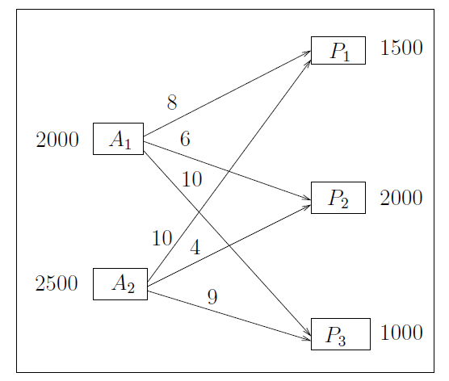
Para plantear un modelo lineal que represente el problema definimos
\(x_{ij}:\) cantidad de barras de pan que se envían desde cada origen \(a_i\), \(i = 1, 2,\) a cada destino \(P_j, j = 1, 2, 3.\)
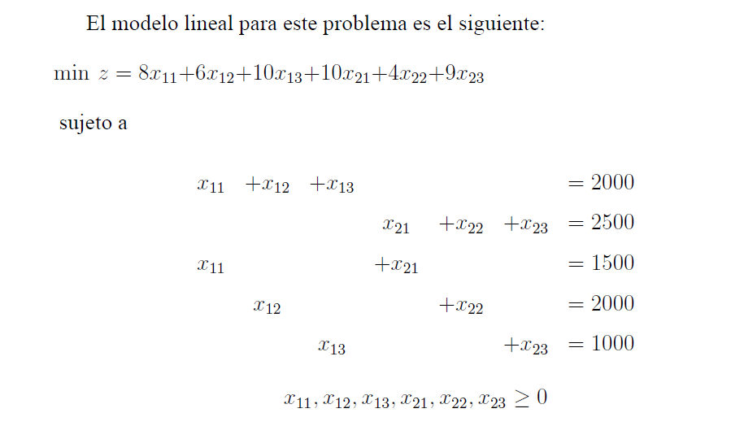
En este caso las restricciones se pueden escribir con igualdad porque la suma de ofertas es igual a la suma de demandas. Para observar la estructura de la matriz A escribimos el modelo de la siguiente forma:
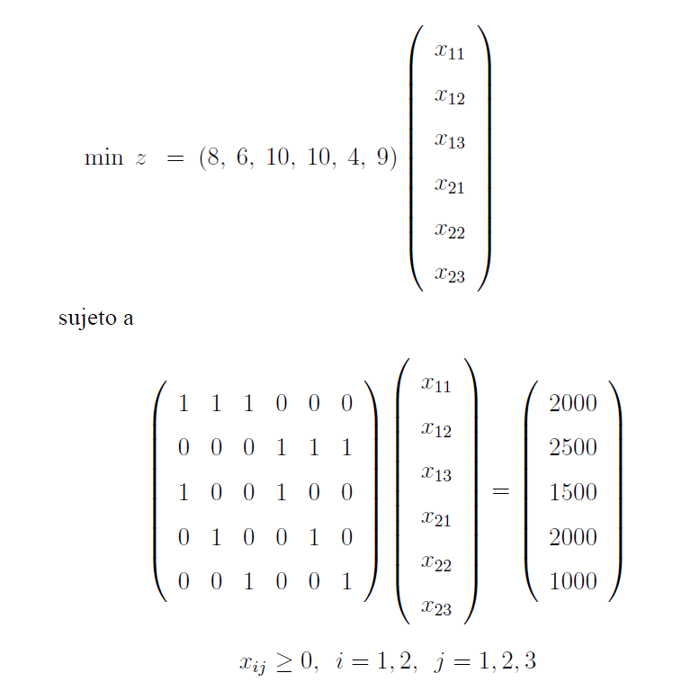
En este ejemplo hay 2 orígenes, \(m = 2\) , y \(3\) destinos, \(n = 3\). La matriz \(A\) tiene \(2 + 3\) filas y \(2 × 3\) columnas. Se puede comprobar que el rango de la matriz es 4.
Por otra parte, todos los vectores columna tienen solamente 2 componentes iguales a 1 y las demás son 0. Si denotamos los vectores columna de la matriz A con dos subíndices, es decir, \(a_{11}, a_{12}, a_{13}, a_{21}, a_{22}, a_{23}\), podemos observar en qué posiciones aparece un 1 y en que posiciones aparece un 0. Por ejemplo, el vector \(a_{11}\) tiene un 1 en la primera posición y otro 1 en la posición \(m + 1\); el vector \(a_{21}\) tiene un 1 en las posiciones 2 y en la \(m + 1\); el vector \(a_{23}\) tiene un 1 en las posiciones 2 y \(m + 3\). En general, podemos decir que un vector \(a_{ij}\) de la matriz A tiene un 1 en las posiciones i y \(m + j\).
En general, la matriz \(A\) y su estructura dependen del número de orígenes y destinos. Cualquier problema de transporte de \(m\) orígenes y \(n\) destinos tiene la misma matriz A. Esta matriz tiene \(m + n\) filas y \(m × n\) columnas. El rango de \(A\) es \(m + n − 1\), es decir, las bases están formadas por \(m + n − 1\) vectores. Los vectores columna de la matriz A tienen solamente 2 componentes con valor 1 y el resto son 0. Para un vector \(a_{ij}\) de la matriz A los unos están en las posiciones \(i\) y \(m + j\). Por tanto, los datos importantes de un problema de transporte son el número de orígenes, el número de destinos, las ofertas, las demandas y los costos de transporte. Esta información es la que se recoge en la que llamaremos forma matricial para el problema de transporte.
Forma matricial#
Una manera de representar el problema de transporte es la llamada forma matricial que es más adecuada para este problema. La forma matricial también llamada tabla de costos aparece en la Figura siguiente. En la tabla aparecen las ofertas, las demandas y los costos de transporte.
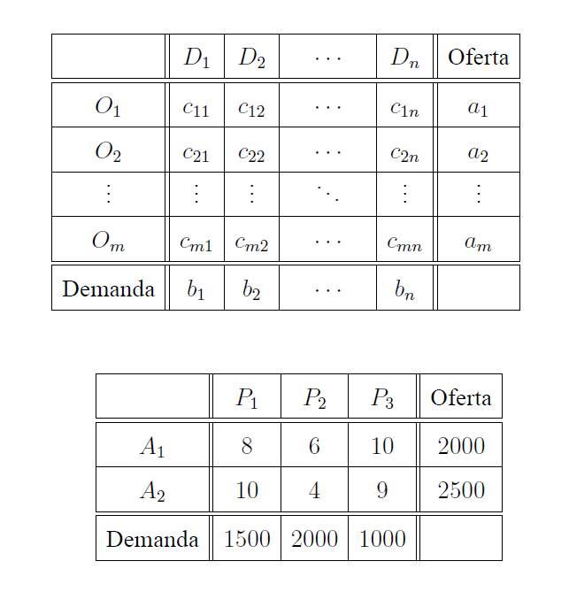
Ejercicios modelamiento#
Intenta realizar la representación matricial de los siguientes problemas de transporte:
Una empresa debe planificar la producción de un artículo para los 4 trimestres del próximo año. Puede estimar la demanda en las siguientes unidades: 200, 150, 200 y 100 en cada uno de los trimestres. La capacidad de producción está limitada a 150 unidades en cada trimestre. Las demandas de un trimestre no se pueden satisfacer en trimestres posteriores. El costo unitario de producción es de 2 unidades, pero en el caso de que haya almacenamiento se incrementa en 0.5 unidades en cada periodo por cada unidad almacenada.
Una empresa produce un único artículo en tres plantas, A1, A2 y A3. La capacidad de producción mensual de la empresa está limitada a 1500 unidades mensuales en cada una de las plantas. La empresa tiene cuatro clientes mayoristas cuyas demandas mensuales son 1000, 1200, 1500 y 1000 unidades respectivamente. El beneficio unitario que le proporciona su producto, considerados los costos de producción y el precio de venta, es de 110 unidades. Los costos de envío a los 4 clientes mayoristas que la empresa tiene vienen dados por la siguiente tabla.
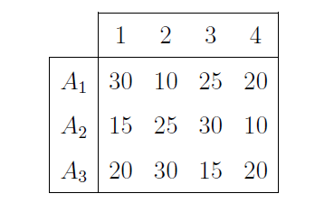
El objetivo de la empresa es organizar la producción en cada uno de los meses para obtener el máximo beneficio.
Teoremas y definiciones#
Para adecuar el método simplex a la búsqueda de una solución óptima para el problema de transporte, veamos los teoremas que verifican las soluciones de un problema de este tipo.
Teorema 1 Para que el problema de transporte tenga solución es condición necesaria y suficiente que la oferta total sea igual a la demanda total.
En los casos en los que dicha condición no se verifica es necesario adecuar el problema y posteriormente interpretar la solución obtenida. (En clase hemos hablado como adecuarlo: Colocar un origen o destino ficticio con oferta o demanda 0 y costo 0)
Definición (Problema equilibrado.) Se dice que un problema de transporte es equilibrado si la oferta total es igual a la demanda total.
Teorema 2 Un problema de transporte equilibrado siempre tiene una solución factible.
Teorema 3 Todo problema de transporte equilibrado tiene una solución básica factible. Esta solución tiene \(m + n − 1\) variables positivas como máximo.
Solución básica factible inicial#
Para calcular una solución para el problema del transporte, utilizaremos una tabla, de las mismas dimensiones que la tabla de costos, a la que llamaremos tabla de flujos . En esta tabla colocaremos los flujos de transporte, es decir, las cantidades de producto transportadas desde cada origen hasta cada destino.
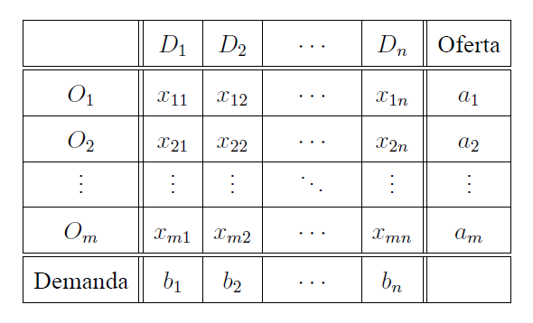
El método de la esquina noroeste#
Dado un problema equilibrado, se obtiene una solución factible básica inicial con los siguientes pasos:
Paso 1. Elegir la esquina noroeste \((i, j)\) de la tabla de flujos (inicialmente \(i = 1, j = 1\)).
Paso 2. Asignar el mayor flujo posible de transporte,\(x_{ij}\), en esa posición. Es decir, \(x_{ij} = \min\{a_i, b_j\}\).
Actualizar la oferta \(a_i\) y la demanda \(b_j\).
Si el mínimo es \(a_i\), la oferta del origen \(O_i\) se actualiza a cero y se prescinde de la fila \(i\) para asignaciones posteriores. Se actualiza la demanda a \(b_j − a_i\).
Si el mínimo es \(b_j\), la demanda del destino \(D_j\) se actualiza a cero y se prescinde de la columna \(j\) en las asignaciones siguientes. Se actualiza la oferta a \(a_i − b_j\).
Si \(a_i\) y \(b_j\) tienen el mismo valor, se actualizan la oferta y la demanda a cero al mismo tiempo. Se prescinde de la fila \(i\) y de la columna \(j\) en asignaciones posteriores.
Paso 3. Se pueden dar dos casos:
Si queda solo una fila o solo una columna, se asignan todas las unidades que están sin asignar. Parar.
En otro caso, ir al Paso 1.
Ejemplo: Consideremos el problema de transporte de la Figura . La tabla de flujos inicial es la siguiente:
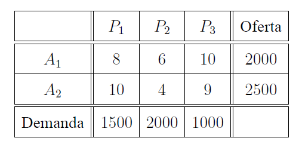
Oferta = 2000 + 2500 = 1500 + 2000 + 1000 = Demanda.
Primera iteración.
Paso 1. Elegimos la esquina noroeste: fila 1 y columna 1.
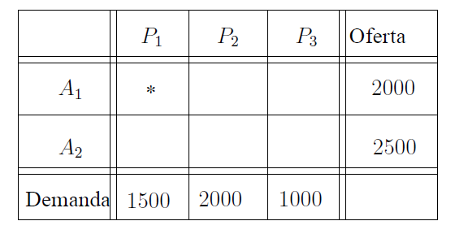
Paso 2. En esa posición asignar el máximo flujo de transporte \(x_{11} = \min \{2000, 1500\} = 1500.\)
– Nueva oferta del origen A1: 2000 − \(x_{11}\) = 500.
– Nueva demanda del destino P1: 1500 − \(x_{11}\) = 0.
La demanda del destino P1 ha quedado satisfecha. Sombreamos la columna 1 y no la tenemos en cuenta en cálculos posteriores. La tabla de flujos de transporte es
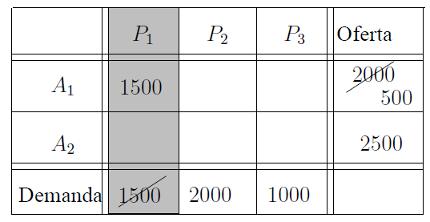
Paso 3. Queda más de una fila y de una columna sin sombrear en la tabla. Ir al Paso 1.
Segunda iteración.
Procedemos como en la iteración anterior eligiendo la esquina noroeste de la tabla, fila 1 y columna 2. Asignamos \(x_{12} = min {500, 2000} = 500.\)
Se actualizan la oferta y la demanda: \(a_1 = 500 − x_{12} = 0\) y \(b_2 = 2000 − 500 = 1500.\)
Obtenemos la nueva tabla de flujos. La oferta del origen A1 se ha agotado, sombreamos la fila 1 y no se toma en cuenta en cálculos posteriores.
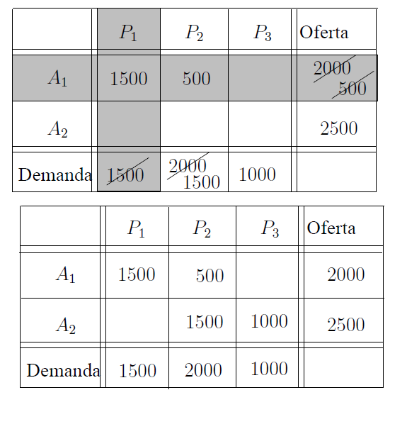
Ahora solo queda un origen; asignamos todas las unidades que están sin asignar:
\( x_{22} = 1500\) y \( x_{23} = 1000.\)
Esta solución inicial es factible y básica. La solución tiene \(m + n − 1 = 2 + 3 − 1 = 4\) variables mayores que cero.
Solución:
Costo de transporte:
El método de la esquina noroeste es un método sencillo para el cálculo de una solución factible básica inicial para el problema de transporte. Este método no toma en cuenta la tabla de costos para calcular una solución. Una mejora del método consiste en tomar en cuenta los costos al elegir las posiciones para asignar los flujos.
Método de Vogel#
El método de la esquina noroeste y el método de Vogel se diferencian únicamente en el paso de selección de la variable a asignar. Para la selección de dicha variable se calculan en la tabla de costos las diferencias por filas y por columnas que se definen de la siguiente manera.
\(DF_i\) = diferencia en valor absoluto de los 2 costos menores de la fila \(i\).
\(DC_j\) = diferencia en valor absoluto de los 2 costos menores de la columna \(j\).
Paso 1.
Calcular las diferencias por fila y por columna en la tabla de costos. Seleccionar la fila o columna de mayor diferencia y en ella la casilla \((i, j)\) de mínimo costo \(c_{ij}\).
Paso 2.
En la tabla de flujos, asignar a la variable sij el flujo ma´ximo posible en la posición seleccionada \(s_{ij} = \min\{a_i, b_j\}.\)
Actualizar la oferta ahí y la demanda \(b_j\).
Si el mínimo es \(a_i\), actualizar la oferta del origen \(O_i\) a cero y prescindir de la fila i para asignaciones posteriores. Se actualiza la demanda a \(b_j\) − \(a_i\).
Si el mínimo es \(b_j\), actualizar la demanda del destino Dj a cero y prescindir de la columna j en asignaciones posteriores. Se actualiza la oferta a \(a_i\) − \(b_j\).
Si \(a_i\) y \(b_j\) tienen el mismo valor, la oferta y la demanda se actualizan a cero al mismo tiempo. Se prescinde de la fila i y de la columna j en asignaciones posteriores.
Paso 3.
Se pueden dar dos casos:
Si queda solo una fila o solo una columna, se asignan todas las unidades que están sin asignar. Parar.
En otro caso, ir al Paso 1.
Ejemplo.
Calcular una solución factible básica para el problema equilibrado utilizando el método de Vogel.
Primera iteración.
Paso 1. Calculamos las diferencias \(DF_i\) y \(DC_j\) en la tabla de costos.
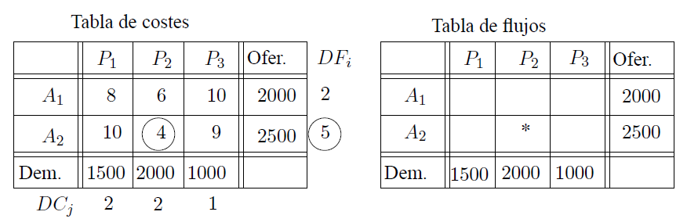
Elegimos la línea con mayor diferencia, en este caso la fila 2. El mínimo costo en dicha fila es \(c_22 = 4\).
Paso 2. Asignar el máximo flujo
\(x_{22} = \min\{2000, 2500\} = 2000.\)
Actualizar la oferta y la demanda. Sombreamos la columna 2 porque ha quedado satisfecha y no hay que tenerla en cuenta en posteriores asignaciones.
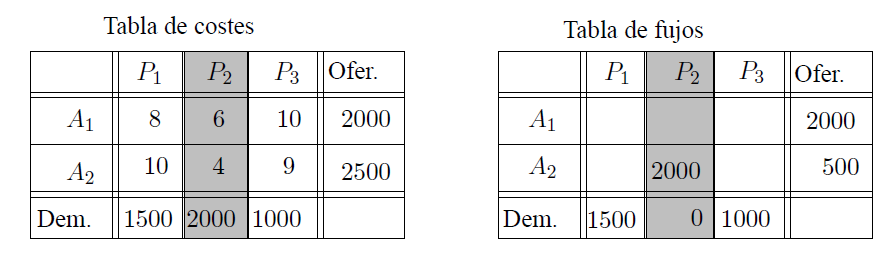
Paso 3. Quedan más de una fila y de una columna en la tabla. Ir al Paso 1.
Segunda iteración.
Se procede como en la iteración anterior.
Calculamos las diferencias por filas y por columnas.
Elegimos la mayor diferencia; en este caso hay empate en la primera fila y en la primera columna.
Elegimos cualquiera de ellas, por ejemplo la fila 1 y en ella el mínimo costo, \(c_11 = 8\).
Asignamos el máximo flujo
Actualizamos las ofertas y las demandas. El destino 1 queda satisfecho y lo eliminamos para posteriores asignaciones.
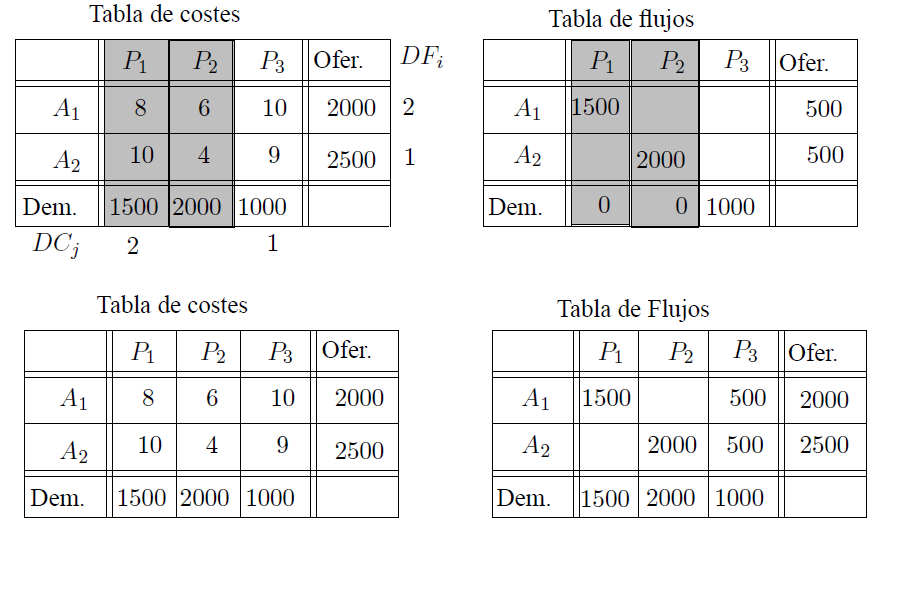
Solo queda una columna y, por tanto, hay que asignar todas las cantidades que todavía no se han asignado y se tiene una solución inicial para el problema. Tabla de costos Tabla de Flujos
solución:
costo de transporte:
Esta solución es mejor que la obtenida por el me´todo de la esquina noroeste porque tiene un costo menor.
Mejora de una solución básica factible#
Ejemplo: Vamos a construir el modelo dual asociado al problema que hemos estado trabajando hasta aquí.
sujeto a
El algoritmo de transporte es una adaptación del algoritmo simplex. En este caso el objetivo es minimizar; obtenida una solución factible básica inicial, calculamos otra para la que la función objetivo tome un valor más pequeño.
Como sabemos, hay que realizar un cambio de base eligiendo una variable para entrar en la base y otra para salir. Esta selección se realiza siguiendo los criterios que usamos para el caso del simplex de redes para el problema de flujo a costo mínimo, esto es, vamos a elegir una variable no básica cuyo costo reducido sea negativo y eligiremos a la variable para salir, como aquella donde el flujo disminuya hasta su cota inferior, que en este caso es 0.
Variable que entra en la base#
Las condiciones de holgura complementaria de KKT establecen que para cada par de restricciones primal-dual:
Donde:
\(x_{ij}\) son las soluciones óptimas del problema primal.
\(u_i\) y \(v_j\) son las soluciones óptimas del problema dual.
Usando las condiciones de holgura complementaria, podemos derivar los costos reducidos. Si en la solución óptima, \(x_{ij} > 0\), entonces por holgura complementaria, tenemos que: $\( c_{ij} - u_i - v_j = 0 \)\( \)\( u_i + v_j = c_{ij} \)$
Ahora, para una variable no básica en la solución óptima, donde \(x_{ij} = 0\), el costo reducido, \(\bar{c}_{ij}\), se puede considerar como la cantidad por la cual el costo asociado, \(c_{ij}\), excede la suma de las variables duales asociadas, \(u_i\) y \(v_j\). Por lo tanto, el costo reducido, \(\bar{c}_{ij}\), para cualquier variable no básica, \(x_{ij}\) (donde \(x_{ij} = 0\)), se calcula como:
Si \(d_{ij} = 0\), la variable correspondiente está en la base óptima.
Si \(d_{ij} > 0\), la solución actual sigue siendo óptima si introducimos esa variable en la solución.
Si \(d_{ij} < 0\), introducir esa variable en la solución y reoptimizar puede llevar a una solución de menor costo.
Para calcular los costos reducidos es necesario conocer los valores de las variables duales. Estos valores se pueden calcular teniendo en cuenta que \(u_i - v_j= c_{ij} \) para todas las variables \(x_{ij}\) que son básicas.
En la base hay \(m + n − 1\) variables; se tienen \(m + n − 1\) ecuaciones del tipo \( u_i - v_j = c_{ij}\) y \(m + n\) incógnitas, \(u_1, . . . , u_m, v_1, . . . , v_n\).
Este es un sistema con un grado de libertad. Se puede puede calcular una solución del sistema dando un valor a una de las incógnitas.
Una vez conocidos los valores de las variables duales se pueden calcular todos los costos reducidos. Teniendo en cuenta que el objetivo es minimizar, se pueden dar dos casos.
Si \(c_{ij} - u_i + v_j \geq 0, i = 1, . . . , m, j = 1, . . . , n,\) entonces la solución es óptima.
Si existe \( c_{ij} - u_i + v_j <0 \), la solución puede ser mejorada. Para mejorarla, entra en la base la variable asociada al mayor \(c_{ij} - u_i + v_j\) entre los negativos.
Ejemplo. Consideramos la solución factible básica obtenida cuando usamos el método de la esquina noroeste para el ejemplo.
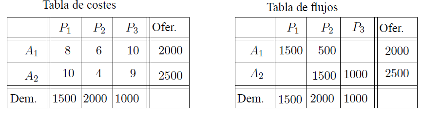
Las variables básicas son \(x_11, x_12, x_22\) y \(x_23\). Para calcular las variables duales \(u_1, u_2, v_1, v_2, v_3\) se tiene el siguiente sistema:
\(x_{11}\) es básica ⇒ \(u_1 + v_1 = 8 \)
\(x_{12}\) es básica ⇒ \(u_1 + v_2 = 6 \)
\(x_{22}\) es básica ⇒ \(u_2 + v_2 = 4 \)
\(x_{23}\) es básica ⇒ \(u_2 + v_3 = 9 \)
Tenemos un sistema de 4 ecuaciones y 5 incógnitas, por lo que este sistema tiene infinitas soluciones. Nos interesa cualquiera de las soluciones, y para ello, damos un valor cualquiera a una incógnita, y calcularemos el valor del resto.
Por ejemplo, si \(u_1 = 0\), se obtienen \(v_1 = 8, v_2 = 6, u_2 = −2\) y \(v_3 = 11\).
Calculamos los costos reducidos para todas las variables no básicas \(x_{ij}\), en este caso \(x_{13}\) y \(x_{21}\).
\( \bar{c}_{13}= c_{13} - u_1 - v_3 = 10 - 0 - 11 = - 1 < 0.\)
\( \bar{c}_{21}= c_{21} - u_2 - v_1 = 10 -(-2) -8 = 4 > 0.\)
El costo reducido del arco \(13\) es negativo. Por tanto, se puede encontrar una solución mejor haciendo básica la variable \(x_{13}\).
Variable que sale de la base#
Para determinar la variable que sale de la base tenemos en cuenta los siguientes resultados.
En el problema de transporte equilibrado, las variables que pertenecen a la base no forman un ciclo. En el ejemplo anterior \(x_{11}, x_{12}, x_{22}\) y \(x_{23}\) no forman un ciclo.
Se puede encontrar un único ciclo formado por las variables que pertenecen a la base y la variable que entra en la base.
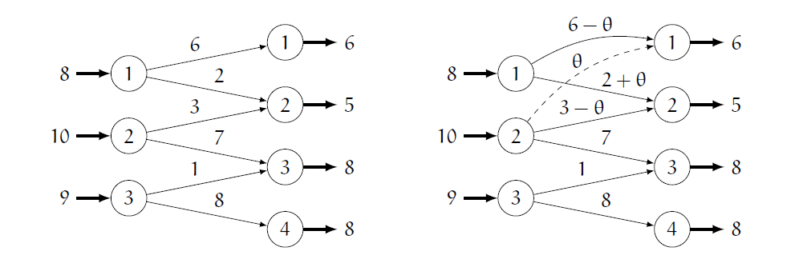
Regla para encontrar el ciclo.
Considerar la variable que entra en la base como flujo positivo y eliminar filas y columnas que tengan un único flujo positivo. El proceso se realiza de la siguiente manera: empezar eliminando filas, después columnas, y repetir el proceso hasta que ya no se puedan eliminar más líneas. Las casillas que contienen flujo positivo y no han sido eliminadas forman el ciclo único.
Una vez identificado el ciclo asignaremos un flujo positivo a la variable que entra en la base; pero alguna variable que forma parte del ciclo debe tomar el valor cero y dejar la base. Para decidir qué variable de las que forman parte del ciclo debe abandonar la base es necesario observar la tendencia de los flujos del ciclo.
Así, el vector de entrada está asociado a un flujo que tiende a aumentar, ya que pasa de ser cero a tener un valor positivo. Como las ofertas y demandas se tienen que satisfacer, los flujos del ciclo que estan en la misma fila y columna tienen que disminuir en la misma cantidad. De la misma manera, los flujos adyacentes a éstos en el ciclo tenderán a aumentar. Los flujos que tienden a disminuir bajaran de valor hasta que uno de ellos tome el valor cero y la variable asociada a ese flujo dejará la base. La cantidad asignada a la variable que entra en la base es el mínimo de los flujos que tienden a disminuir, dicho flujo se hace cero y la variable sale de la base.
Ejemplo. Continuamos con el ejemplo que hemos trabajo hasta ahora.
Hemos visto que la variable \(x_{13}\) entra en la base y el ciclo único entre esta variable y las básicas es el formado por \(x_{13}, x_{12}, x_{22}, x_{23}\). En la tabla aparecen sombreadas las casillas asociadas a las variables del ciclo.
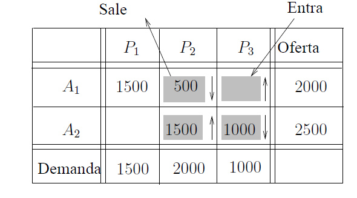
Los flujos que tienden a disminuir son \(x_{12}\) y \(x_{23}\). Elegiremos el flujo mínimo entre los que tienden a disminuir,
\(\min\{x_{12} = 500, x_{23} = 1000\} = x_{12}.\)
Se modifican los flujos que forman el ciclo; los flujos que no forman parte del ciclo no modifican su valor. Así, se obtiene la siguiente solución:
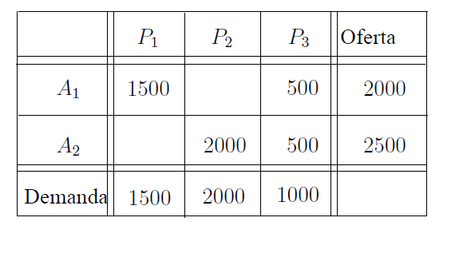
solución: \(x_{11} = 1500, x_{12} = 0, x_{13} = 500, x_{21} = 0, x_{22} = 2000, x_{23} = 500.\)
costo de transporte: \(z = (8 × 1500) + (10 × 500) + (4 × 2000) + (9 × 500) = 29500.\)
Esta solución es mejor que la anterior
Tabla de transporte#
Hasta ahora hemos trabajado con dos tablas: la tabla de costos y tabla de flujos. A la hora de mejorar la solución hemos necesitado, además, calcular las variables duales \(u_i\) y \(v_j\) y los costos reducidos \(\bar{c}_{ij}\). Por conveniencia, todos estos datos, necesarios para el cálculo de la solución óptima para el problema de transporte, se pueden recoger en una única tabla llamada Tabla de transporte que tiene la siguiente estructura:
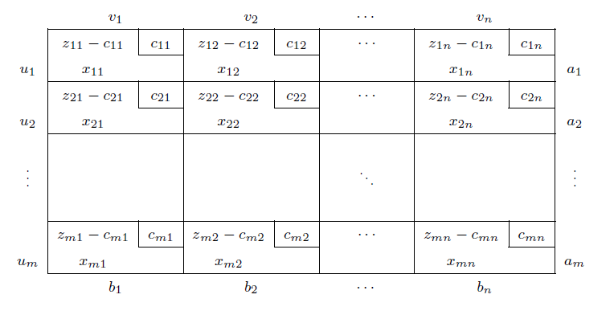
Algoritmo de transporte#
A continuación se resumen los pasos a seguir para hallar la solución óptima de un problema de transporte cuando el objetivo es minimizar.
Paso 1. Equilibrar el problema.
Paso 2. Calcular una solución factible básica inicial.
Paso 3. Calcular los valores \(u_1, . . . , u_m, v_1, , v_n\) asociados a la base actual.
Paso 4. Calcular los costos reducidos \(c_{ij} - u_i - v_j \) para los flujos no básicos.
Si para toda variable no básica \(c_{ij} - u_i - v_j > 0 \) , la solución actual es óptima única. Parar.
Si para toda variable no básica \(c_{ij} - u_i - v_j \geq 0 \) y existe un valor \(c_{ij} - u_i - v_j = 0 \), entonces hay soluciones óptimas múltiples. Elegir dicha variable para entrar e ir al Paso 5.
Si existe \(c_{ij} - u_i - v_j < 0 \) entonces la solución puede ser mejorada. Elegir como variable de entrada la asociada al mayor indicador entre los positivos. Ir al paso 5.
Paso 5. Detectar el ciclo que forman la variable que entra en la base y las variables de la base actual. Calcular la nueva solución. Ir al Paso 3.
Ejercicios para hacer el clase:
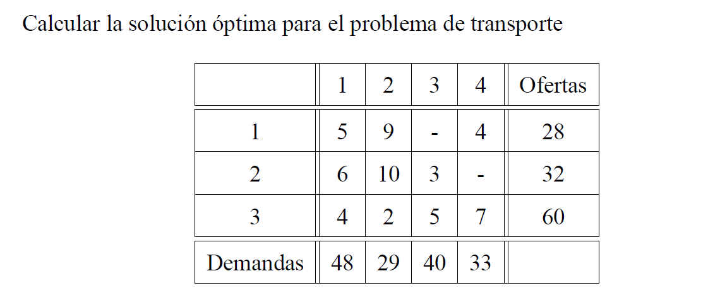
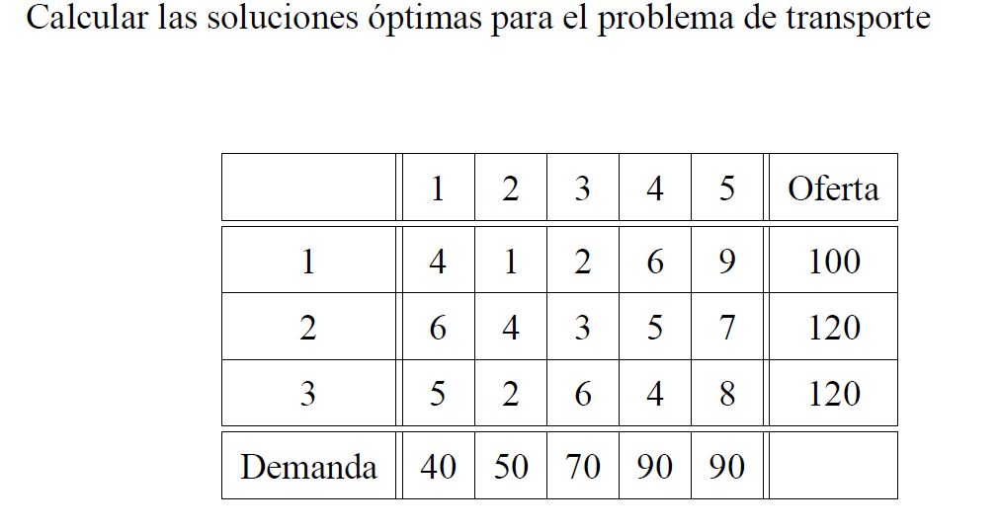